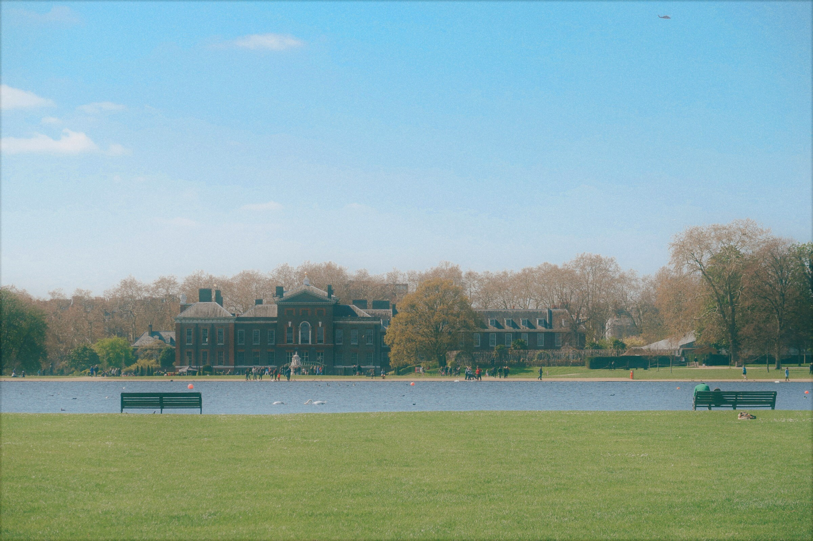

현재 가장 하고 싶은 것
<교환학생>

예전에는 막연히 교환학생 해서 외국에 가고 싶다 였다.
하지만 지금은 조금 다른 마음으로 가고 싶다.
지금 통계학을 전공하고 있는데 공부를 하면 할수록 부족함을 느끼고,
지금 공부하는 것만으로는 실무에서의
사용도 어렵다고 느낀다. 그리고 가장 중요한 것은 어떤 직무로 가야 내가 잘 하고 즐길 수 있을지 확신이 없다는 것이다.
그래서 학교 수업 외에도 인강도 들어보고, 팀을 꾸려 스터디도 해보고, 바쁜 와중에 인공지능 동아리까지 지원했지만
조금 더 다른 시각이나 상황에서 나의 전공을 마주해보고 싶다는 생각이 들었다.
그래서 3학년인 지금이라도,
3학년 2학기에 지원을 하여 선발된다면 4학년이 되는 시점에라도 외국에서 전공공부를 해보려고 한다.
가장 눈 앞에 있는 목표
여름방학에 토플 80점 취득 - 교환학생을 위하여...
졸업 전 취득할 자격증
1. SQLP
2. 빅데이터분석기사
앞으로의 인생 목표
마지막에는 내 사업을 해보고 싶다. 무슨 사업을 어떻게 할 지는 모르겠지만
대학 졸업 후 취직을 해서 일을 하더라도 먼 훗날에는 내 사업을 해보고 싶은 바람이 있다.